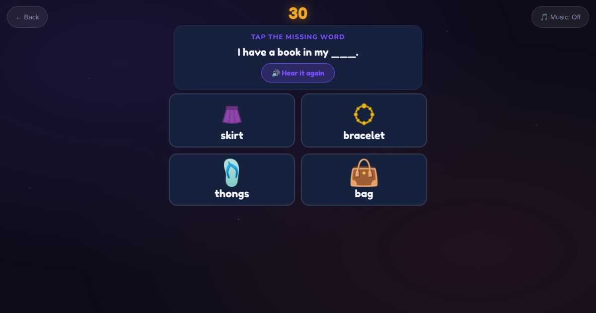

For teachers and tutors
About All Games
One round drawn from every game: letters and sounds, reading, writing, vocabulary, listening, speaking, grammar, numbers, time, money, everyday English and digital skills.

How to play
- Choose how many questions.
- Play.
- See your score.
Play it as a class
Choose All Games in the Teacher Game for a mixed review quiz.